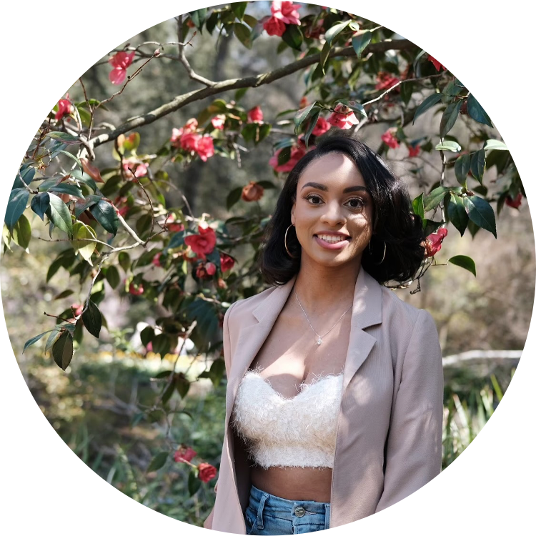

..a child of the universe no less than the trees and the stars.."
I am a first year Master's student in the Department of Computer Science at the University of Southern California.
My research interests include computer vision, graphics and explainable AI.
I am a proud member of the following organizations; National Society of Black Engineers, Black in AI, Society of Women Engineers and Alpha Kappa Alpha Sorority, Incorporated.